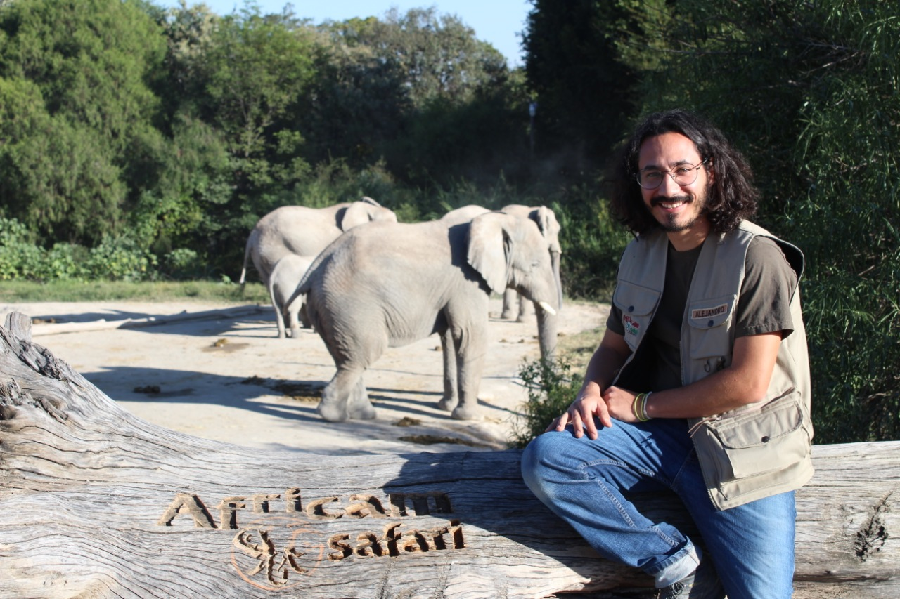

Welcome
Before anything, THANK YOU! Somehow, you are here, and I appreciate the time you took to come and take a glance at my life! 🙋
My name is Alejandro Rodrigo. Through this website, you will be able to know me better. The goal is to share with you some of my research, ongoing projects, work experience, and hobbies.
In here I’m allowing myself to share a small part of my history and background with you. I will show you both, my successes, and failures, those that kept me going throughout my life. So, come out with me and embark on a journey where I’m constantly rediscovering my personal, academic, and research motives.
If you are in a hurry, click here to find a summary of my academic career. You can also download my resume, CV, research statement, equity, diversity and inclusion statement, and teaching statement.

I was born on November 8th, 1986, in the traditional territory of the Mēxihcah (Mexica), the capital of the iconic Aztec Empire formerly known as Tenochtitlan and currently recognize as Mexico City. Mexico City is considered the most populous city in North America and is ranked as the fifth most populated city in the world😖, but most importantly, is the taco capital of the world! 😋.
I’m currently living in Vancouver, British Columbia. An astonishing city with a remarkable action plan to be considered “the greenest city in the world” and rated as one of the tops according to the “Green View Index” of treepedia.
I’m proud to enjoy the simple pleasures life has to offer and observing animals is one of them. I’m deeply passionate about animal life and its behavior. That is why I choose to make a professional career out of it! Research provided me with the tools to study how animals behave, but moreover what is their role in the environment they live in and how they can impact our daily lives.
I think CURIOSITY is an essential part of my life as a researcher, but LOVE motivates me to keep going.
My current research interests include Animal Behavior and Cognition, Animal Well-Being and Environmental Enrichment, Computer Science, Data Management and Statistics, and Urban Ecology and Evolution. These days I’m exploring more about Spatial Navigation, Learning and Memory, Sensation and Perception, and Fish and Invertebrate Behavior.
I decided to summarize my academic career below. Still, if you want to know more in detail, I invite you to click on the links scattered throughout the website. Please feel free to explore it! I hope you enjoy what I have prepared for you. Again, thanks for visiting!
1 Degrees
1.1 Ph.D. Candidate in Behavioral Sciences (Sep 2017 – to present)
I’m currently finishing my Ph.D. degree in Experimental Analysis of Behavior at the Center of Studies and Research in Behavioral Sciences of the University of Guadalajara under the direction of Dr. Jonathan Buriticá. I’m a proud member of the Learning and Comparative Cognition Laboratory. My thesis is co-supervised by Dr. Debbie M. Kelly, head of the Comparative Cognition and Cognitive Biology Laboratory at the University of Manitoba. My research focuses on how the location of the goal in relation to visual cues in a virtual space affects the encoding of spatial information in humans. Click here to check out the game Dr. Laurent Avila Chauvet and I developed for the experiment. Soon, I will post the results here and the GameMaker code here.
While studying for my Ph.D., I had the opportunity to collaborate and publish two super cool research papers and one preprint. If you want to know more about them, click here.
1.2 Master´s in Behavioral Science (Jan 2014 – Jul 2017)
I got my master’s degree in Experimental Analysis of Behavior at the same institution as my Ph.D. Throughout my master’s, I was part of the Behavioral Processes and Animal Models Laboratory under the co-supervision of Dr. Carlos Torres Ceja and Dr. Carlos Javier Flores Aguirre. My master’s thesis evaluates the effects of environmental enrichment in Wistar rats using a behavioral contrast procedure. Additionally, during this time, I ran several other experiments focused on evaluating the effects of environmental enrichment on the open field. Click here{target=“_blank”} to see more about it.
1.3 Bachelor´s in Veterinary Science (May 2005 – Sep 2012)
I have a bachelor’s degree in Veterinary Sciences from the Autonomous Metropolitan University campus Xochimilco. While studying, I did a one-year internship at the Animal Welfare Department at Africam Safari Zoo under the supervision of BVSc Gerardo Martinez del Castillo. During this internship, I acquired some valuable skills to manage and care for wildlife animals. As a result of the internship, Isis Z. Gonzalez and I graduated with a project that evaluated the effects of environmental enrichment on Asian elephants. The project was directed under the co-supervision of Dr. José Antonio Martínez García and BVSc Gerardo.
2 Work Experience
2.1 Chief Operating and Commercial Officer at Walden Modular Equipment (Sep 2018 to present)
I work part-time as Chief Operating and Commercial Officer in Walden Modular Equipment. A company whose primary goal is develop personalized laboratory equipment used in behavioral studies.
Main duties:
1) Oversee day-to-day administrative and operational functions of the company.
2) Coordination of the development, production, marketing, and finance departments’ actions.
3) Ensure the company complies with the local laws and regulations.
4) Manage and expand the client portfolio.
5) Supervision and improvement of customer service and satisfaction guidelines.
6) Control of future investments and purchases.
2.2 Founding Partner of Walden Modular Equipment (Ago 2017 – Sep 2018)
In collaboration with Dr. Laurent Avila-Chauvet and the Walden Modular Equipment team, we started the “Armando Ciencia” project. This project aimed to build laboratory equipment capable of studying behavior through quickly assembled modules. The equipment manufactured was comparable to “lego for scientists.” With this idea, we won an invitation to participate in the 6th generation of Reto Zapopan (a government agency that encourages innovative projects){target=“_blank”}. By the end of 2018, the Armando Ciencia project evolved, and we found the company Walden Modular Equipment.
2.3 Coordinator of the Animal Welfare Department at Africam Safari (July 2011 – April 2013)
After graduating from veterinary sciences, I coordinated the animal welfare department at Africam Safari, paying particular attention to the environmental enrichment program. During this time, more than 45 species and approximately 120 individuals were involved with the program. One of the program’s main objectives was to promote the development of cognitive skills through tasks related to problem-solving, and to increase typical species behaviors. Another essential activity of the department was coordinating the volunteer program, which included more than 30 undergraduate students from veterinary sciences, biology, and psychology. During this time, I was also head of the Animal Ambassador Program. This program was endorsed by the Conservation Education Department, and it included more than 18 different species.
Main duties:
1) Coordination of undergraduate students and volunteers involved in the environmental enrichment program.
2) Scheduling day-to-day activities of the program.
3) Overseeing electronic documentation and reports on environmental enrichment and animal training
programs.
4) Review of safety protocols based on institutional guidelines to provide and improve the well-being
of animals.
5) Provision of expertise about the biology of species to media and zoo guests.
But that’s not it. There is always more! Please click on the links to see research publications, recognitions and credentials earned, work experience, research funding history, ongoing projects, presentations, research statement, equity, diversity and inclusion statement, teaching statement. You also can check some of my hobbies, like photography, cooking, or my excentric blog.